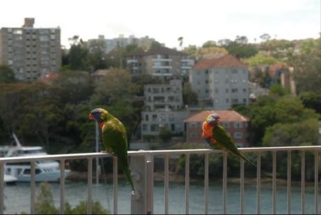
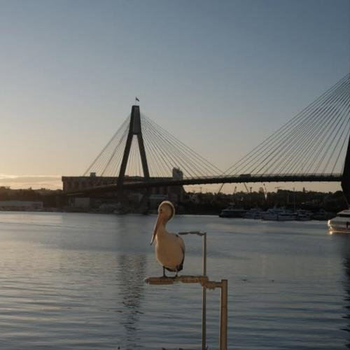
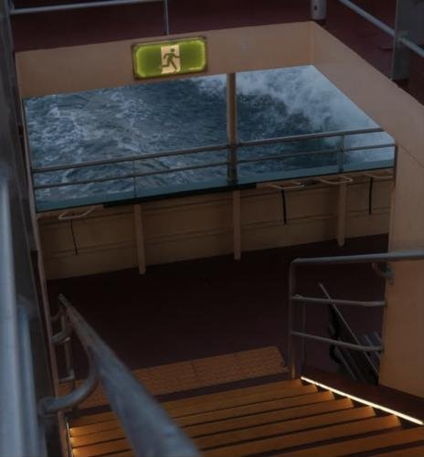
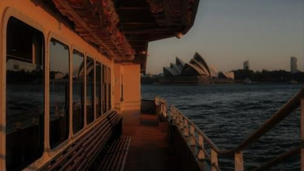
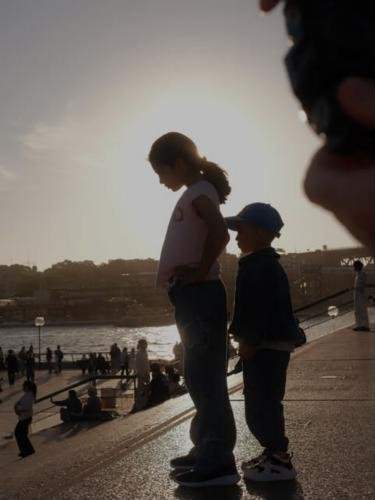
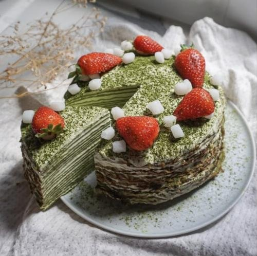
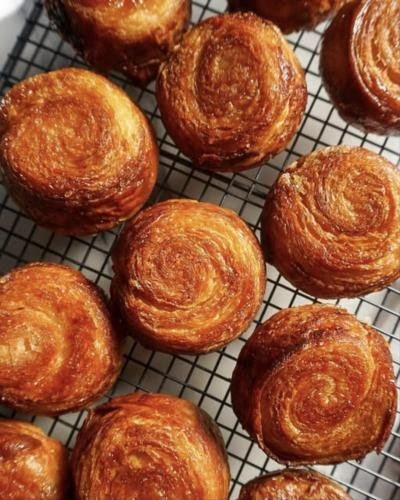
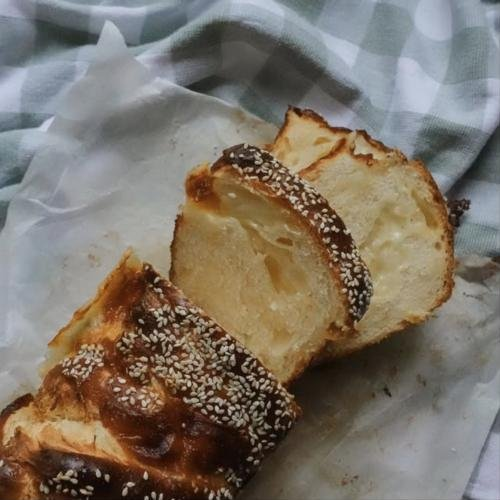
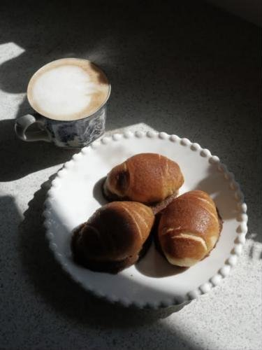

hi, i'm Fadila! ✿
Welcome to my little corner of the internet. I'm a software engineer in Sydney who loves to create: in code, in photos, in bread and in paint.
Click the icons on the left to poke around. Everything is draggable!
Work & Experience
-
2022 – now
Senior Software Engineer
Atlassian · Sydney, NSW
- Frontend engineering with a focus on delivering customer impact through experimentation
- Finalist, Software Engineer of the Year (Women in Digital, 2024)
- Conference speaker on experimentation and product engineering
-
2019 – 2022
Senior Software Engineer
NAB (HICAPS), formerly InLoop (LanternPay) · Sydney, NSW
- Started as a junior business analyst, moved into engineering within six months
- Promoted to senior engineer about a year and a half later
- Taught myself React and JavaScript by diving into the front-end codebase
- Stayed on through the NAB acquisition and merger with HICAPS
-
2018
Internships
IT, consulting and business analysis
Speaking
I give talks about frontend engineering, product engineering and experimentation.
my talks + where they've been
-
When “just validate the form” becomes a product engineering problem
A payment-flow case study: how a request for strict address validation turned into address autocomplete, backed by success metrics and guardrails.
- React Summit US · Nov 2026 · ▶ watch
Building software is cheap. Building the wrong thing is expensive.
Too often, teams ship features based on assumptions: a requirement arrives, implementation begins, and success is treated as “it shipped.”
But in critical user flows, a simple frontend change can introduce real customer risk.
In this talk, we'll explore a case study from a payment flow, where a request to add strict address validation forced us to ask bigger product engineering questions: what are we really building, what impact are we looking for, and how do we release without harming the funnel?
We’ll unpack how those questions changed the solution from blocking users to address autocomplete, helped us negotiate requirements with product and design, and shaped how we measured success, guardrails, and customer risk.
-
From milliseconds to trials started: connecting page load times to business impact
How a 50% cut in load times on key pages led to 6% more trials started, and how to prove it.
- React Summit Asia 2027 · Singapore · Apr 2027 · talk page ↗
“Your page loads are so slow.”
Not an unfamiliar phrase for frontend engineers to hear. But how do we prioritise performance and tech debt when there are always features waiting to be built?
A performance improvement becomes a business win when you can connect the engineering change to a measurable outcome.
In this talk, we'll walk through how we proved that a 50% reduction in load times across our key pages led to 6% more trials started, from identifying the funnels with the highest potential return through implementation, instrumentation, data analysis, and the challenges we faced along the way.
-
Change is only good when measured: building confidence through experimentation
The experimentation lifecycle from an engineer's seat: hypothesis, instrumentation, data and learning from the results.
- SlashNEW · Newcastle · May 2026
- React Day Berlin 2026 · upcoming
- DDD Perth 2026 · accepted ★
- apidays Melbourne · Melbourne · 2026
- Programmable 2026 · Sydney · Mar 2026
- Analysis, Design & Architecture Conf · Melbourne · Nov 2025
Shipping a new feature is easy. Knowing if it actually improved anything? That's the hard part.
Many teams ship features based on intuition rather than evidence. This makes it impossible to understand user behaviour or build confidence in product decisions.
Experimentation is the only reliable way for engineering teams to uncover the true impact of the features they ship.
In this talk, I’ll walk through the experimentation lifecycle from an engineering perspective - forming a hypothesis, adding instrumentation, gathering data, and learning from the results - showing how teams can embed this process into their feature release practices at scale.
-
The how matters: shipping changes in small, measured steps
Asking the product questions that matter, to steer the experience towards what benefits users.
- Atlassian ANZ EngFest · Sydney · Feb 2026
Asking the product questions that matter, to steer the experience towards what benefits users.
-
Building a culture of experimentation in a team that did not experiment
The roadbumps one team hit when adopting experimentation, tackled as people and process problems.
- Atlassian ANZ EngFest · Sydney · Apr 2025
This talk unpacks the different roadbumps our team faced when upskilling with experimentation practices, alongside ways we tackled each problem.
We addressed them as people and process problems to adopt the culture of experimentation in our releases.
Photography
Street photography. @diladialed ↗







Bakery diaries
a baking diary. bread is life. @matchadou ↗









Painting
Watercolours and sketches.


Say hi!
Want to work together, order a cake, or just chat?